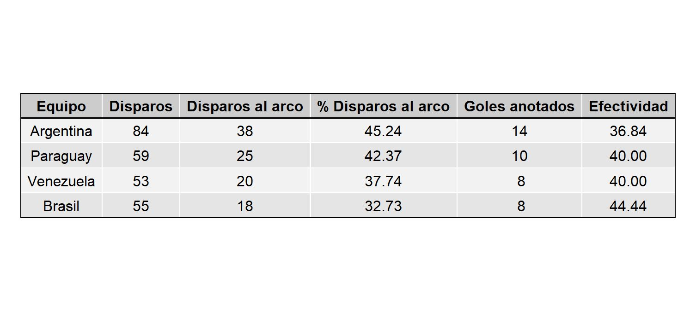
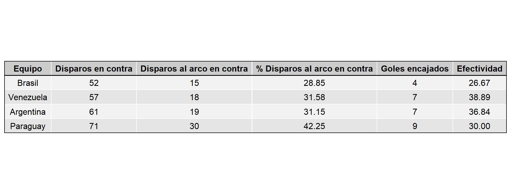
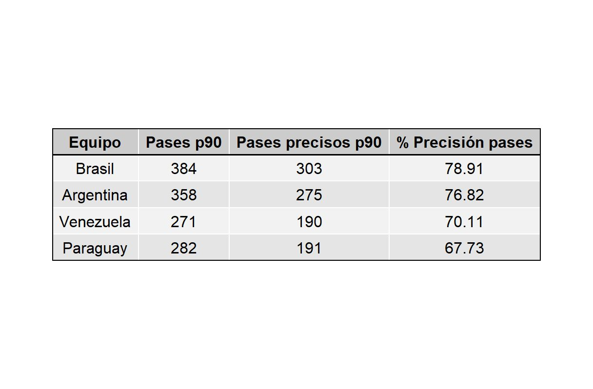
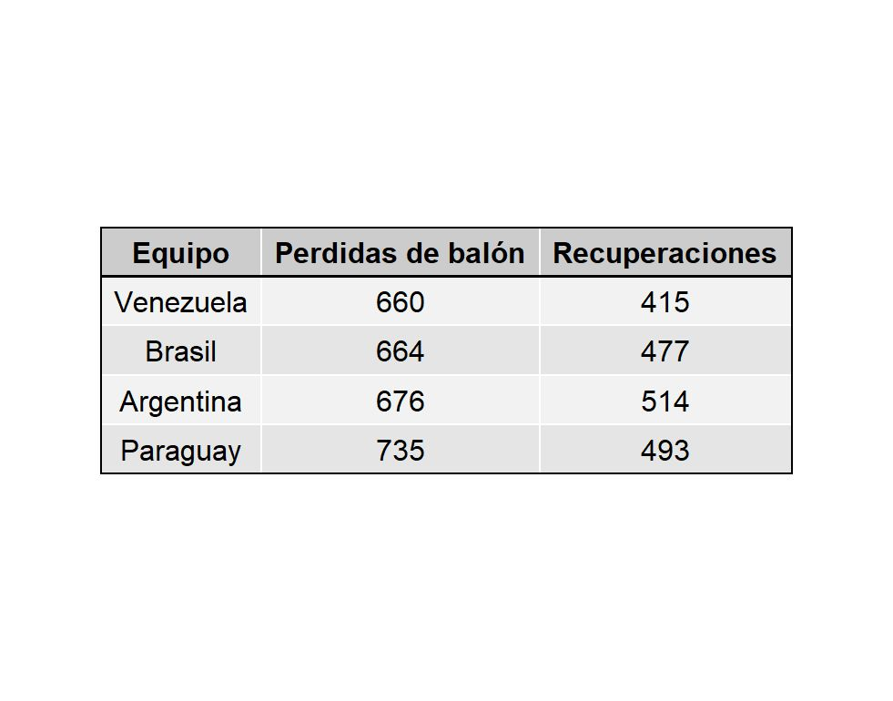
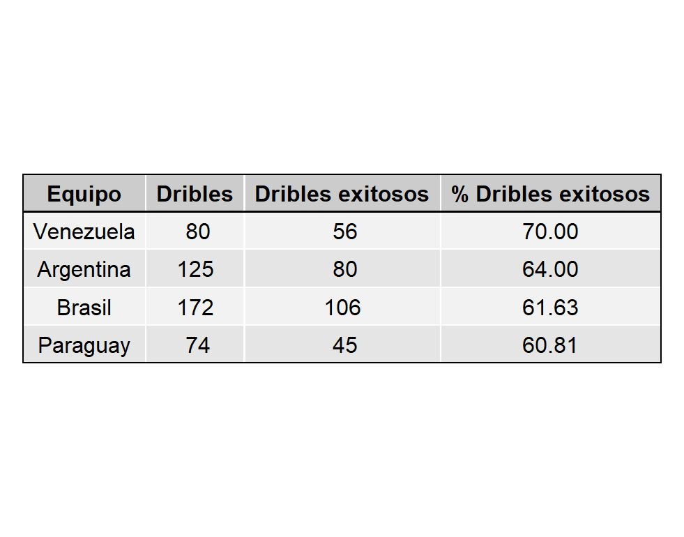
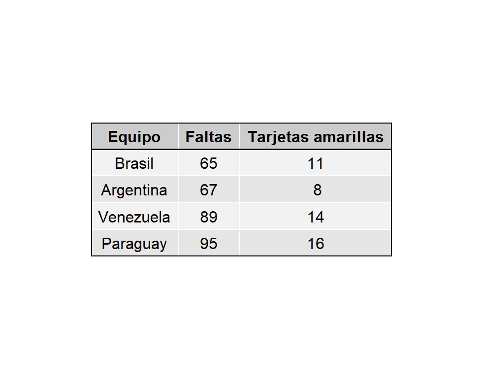

Hoy la #vinotinto ⚽ tiene la oportunidad de clasificar a los juegos olímpicos de Paris 2024 en su partido vs Paraguay. Depende de si mismo y necesita una victoria para lograrlo.
Ambos equipos llegan con 6 juegos disputados, cuentan con 1 derrota, 3 empates y 2 victorias. Gracias a la data proveniente de Smart stats, logré recopliar estas estadísticas durante todo el torneo,
💡 Remates a favor
📌 Venezuela ha realizado 53 remates al arco de ellos 20 (37.74%) fueron al arco y sólo 8 terminaron en gol.
📌 Argentina lidera este ítem con 84 disparos donde 38 (45.24%) fueron al arco y 14 terminaron en gol.
💡 Remates en contra
📌 Venezuela ha permitido 57 remates al arco de ellos 18 (31.58%) fueron al arco y sólo 7 terminaron en gol.
📌 Paraguay es el equipo que más remates ha permitido con 71, 30 (42.25%) de ellos han sido al arco y 7 han teminado en gol.
💡 Pases
📌 Venezuela en promedio hace 271 pases por juego, de los cuales 190 son exitosos (70.11%).
📌 Brasil lidera este ítem con 384 pases por juego donde 303 son exitosos (78.91%).
💡 Recuperaciones y pérdidas de balón
📌 Durante el torneo Venezuela es el equipo que menos pérdidas ha tenido, con unos 660 balones perdidos.
💡 Dribles
📌 Venezuela es el equipo que más dribles exitosos (56) ha tenido, con un 70% de éxito.
📌 Brasil por su parte es el que más dribles intenta con unos 172 durante todo el torneo, de los cuales 106 (61.63%) ha sido exitoso.
💡 Faltas
📌 Paraguay es el equipo que más faltas ha cometido durante el torneo con 95, donde ha recibido 16 tarjetas amarillas.
📌 Venezuela le sigue de cerca con 89 faltas y 14 tarjetas amarillas.
💡 Entradas / barridas
📌 Venezuela ha sido el equipo que más entradas realiza (305) de las cuales 207 son exitosas (67.87%).
📌 Paraguay es el equipo que mejor % de entradas exitosas tiene, cuenta con un 71.13 % de efectividad.